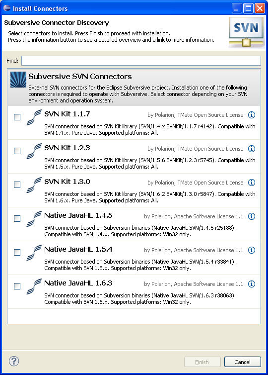

SVN Connectors Discovery
Subversive Connector Discovery allows user to easily install SVN Connectors. The main
problem which Subversive previously had is the overcomplicated procedure of installing:
- users need to install Subversive from 2 different update sites: first for SVN Team Provider and second for SVN Connectors
- there are many combinations how users can install Subversive and Connectors and some of these combinations are not compatible
Thanks to Connector Discovery, the procedure of installing was significantly simplified: now users just need to install
only Subversive SVN Team Provider (without installing SVN connectors from another update site) and then
on eclipse startup on first calling to any Subversive functionality if there are no connectors installed, Connector discovery
feature is automatically called.
This is how 'SVN Connectors Discovery' looks like:
